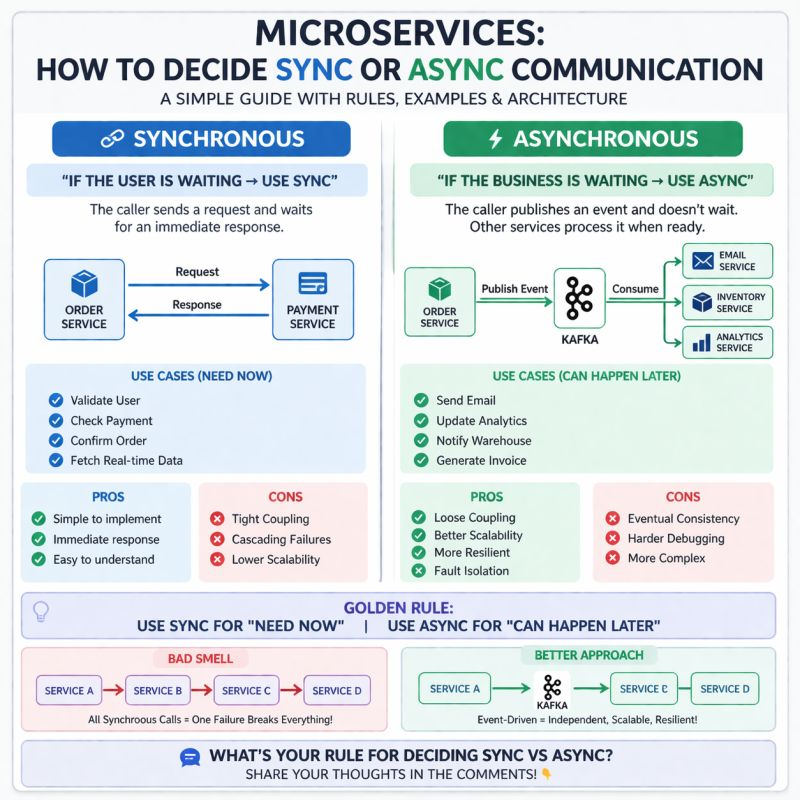

System Design Mastery
Master scalable systems with premium insights
⚔️ Synchronous vs Asynchronous
📚 Quick Navigation
🔹 1. What is Synchronous?
Caller waits for response before moving forward
🧠 Flow:
Service A → Service B → Response → Continue
📌 Example:
- Login API
- OTP verification → Sync (instant response needed)
- Order confirmation → Sync (user is waiting)
💡 Key Point:
👉 User is waiting → must respond immediately

Figure 1: Synchronous Communication Flow
🔹 2. What is Asynchronous?
Caller does NOT wait for response
🧠 Flow:
Service A → Queue/Event → Service B processes later
📌 Example:
- Email notification → Async (background task)
- Update analytics
- Generate invoice
💡 Key Point:
👉 Happens in background

Figure 2: Asynchronous Communication Flow
🆚 Key Differences
| Feature | Synchronous | Asynchronous |
|---|---|---|
| Response | Immediate | Delayed |
| Coupling | Tight | Loose |
| Latency | Higher (waiting) | Lower (non-blocking) |
| Failure Impact | High (cascade) | Low (isolated) |
| Complexity | Simple | Complex |
🎯 When to Use What?
✅ Use Synchronous when:
- User is waiting
- Immediate consistency required
- Critical operations
👉
Example:
Payment
Order confirmation
✅ Use Asynchronous when:
- Task can happen later
- No need to block user
- High scalability needed
👉
Example:
Email
Data processing
🧩 Real System Example (E-commerce)
🛒 Order Flow
Synchronous:
- Validate user
- Check inventory
- Process payment
- Confirm order
Asynchronous:
- Send email
- Update analytics
- Notify warehouse
🚨 Common Mistake
❌ Everything synchronous
Let say have services such as A, B, C, D
A → B → C → D
👉 Problem in above case :
- High latency
- One failure breaks everything
✅ Better Design
A → Event (Kafka) → B, C, D independently
👉 Scalable + resilient 🚀
🧠 Interview-Ready Answer
Synchronous communication is used when an immediate response is required and the user is waiting, while asynchronous communication is used for background processing to improve scalability and reduce coupling.
A good system design often combines both, using synchronous calls for critical paths and asynchronous events for non-blocking tasks.
🚀 One-Line Summary
- Use Sync for "need now"
- Use Async for "can happen later"